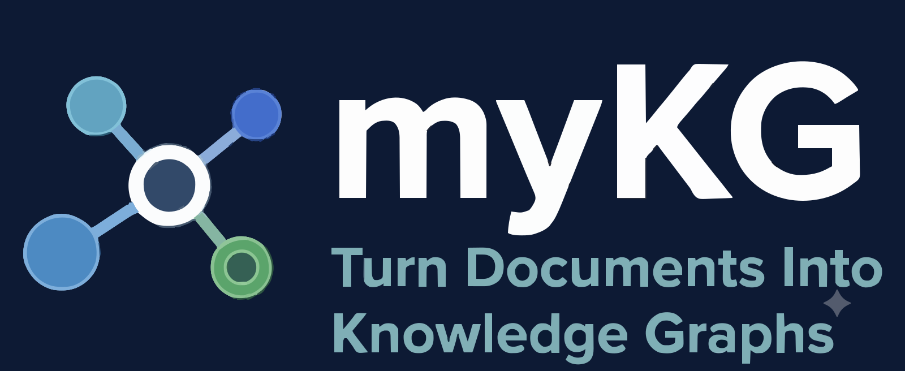

AI workflow that turns documents into a confidence-scored knowledge graph with an induced RDFS/OWL ontology

myKG automatically generates a confidence-scored knowledge graph from a set of mixed documents — Markdown, plain text, PDF, Word, PowerPoint, Excel, HTML, and images — grounded in an induced RDFS/OWL ontology.
It runs as a two-pass LLM pipeline: Pass 1 induces a global schema (concept types and relationship properties) from your document corpus; Pass 2 extracts typed entities and relationships per file against that schema. Every attribute, node, and edge carries a confidence score, so you always know how much to trust what was extracted.
View on GitHub · PyPI · Blog
claude CLIpip install mykg
mykg init
mykg extract-graph my_notes/
Open mykg_sessions/<timestamp>/output/knowledge_graph.html in your browser to explore the result.
See the README for the full command reference, configuration options, and pipeline internals.
Read walkthroughs and case studies on the blog, or dig into the source on GitHub.